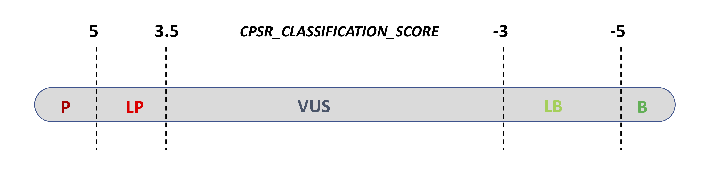

Variant classification (ACMG/AMP)¶
All coding, non-ClinVar variants in the set of genes subject to screening have been classified according to a standard, five-level pathogenicity scheme (coined CPSR_CLASSIFICATION). The scheme has the same five levels as those employed by ClinVar, i.e.
pathogenic (P)
likely pathogenic (LP)
variant of uncertain significance (VUS)
likely benign (LB)
benign (B)
The classification performed by CPSR is rule-based, implementing most of the ACMG criteria related to variant effect and population frequency, which have been outlined in SherLoc (Nykamp et al., Genetics in Medicine, 2017), and also some in CharGer. Information on cancer predisposition genes (mode of inheritance, loss-of-funcion mechanism etc.) is largely harvested from Maxwell et al., Am J Hum Genet, 2016.
The refined ACMG/AMP criteria listed below form the basis for the tier assigned to the CPSR_CLASSIFICATION variable. Specifically, the score in parenthesis indicates how much each evidence item contributes to either of the two pathogenicity poles (positive values indicate pathogenic support, negative values indicate benign support). Evidence score along each pole (‘B’ and ‘P’) are aggregated, and if there is conflicting or little evidence it will be classified as a VUS. This classification scheme has been adopted by the one outlined in SherLoc.
ACMG_BA1_AD (-5) - Very high MAF (> 0.5% in gnomAD non-cancer pop subset) - min AN = 12,000 - Dominant mechanism of disease
ACMG_BS1_1_AD (-3)- High MAF (> 0.1% in gnomAD non-cancer pop subset) - min AN = 12,000 - Dominant mechanism of disease
ACMG_BS1_2_AD (-1) Somewhat high MAF (> 0.005% in gnomAD non-cancer pop subset) - Dominant mechanism of disease
ACMG_BA1_AR (-5) - Very high MAF (> 1% in gnomAD non-cancer pop subset) - min AN = 12,000 - Recessive mechanism of disease
ACMG_BS1_1_AR (-3)- High MAF (> 0.3% in gnomAD non-cancer pop subset) - min AN = 12,000 - Recessive mechanism of disease
ACMG_BS1_2_AR (-1)- Somewhat high MAF (> 0.005% in gnomAD non-cancer pop subset) - Recessive mechanism of disease
ACMG_BP3 (-2.5) - Non-coding variant in the UTR or promoter region
ACMG_BP7 (-2.5) - Silent and intronic changes outside of the consensus splice site
ACMG_BP4 (-1)- Multiple lines (>=5) of computational evidence support a benign effect on the gene or gene product (conservation, evolutionary, splicing impact, etc. - from dbNSFP
ACMG_BMC1 (0)- Peptide change is at the same location of a known benign change (ClinVar)
ACMG_BSC1 (-3)- Peptide change is reported as benign (ClinVar)
ACMG_BP1 (-0.5)- Missense variant in a gene for which primarily truncating variants (>90% of pathogenic variants) are known to cause disease (ClinVar)
ACMG_PM2_1 (0.5)- Allele count within pathogenic range (MAF <= 0.005% in the population-specific non-cancer gnomAD subset)
ACMG_PM2_2 (1)- Alternate allele absent in the population-specific non-cancer gnomAD subset
ACMG_PVS1_1 (5) - Null variant (frameshift/nonsense) - predicted as LoF by LOFTEE - within pathogenic range - LoF established for gene
ACMG_PVS1_2 (2.5)- Null variant (frameshift/nonsense) - not predicted as LoF by LOFTEE - within pathogenic range - LoF established for gene
ACMG_PVS1_3 (2) - Null variant (frameshift/nonsense) - predicted as LoF by LOFTEE - within pathogenic range - LoF not established for gene
ACMG_PVS1_4 (0) - Null variant (frameshift/nonsense) - not predicted as LoF by LOFTEE – within pathogenic range - LoF not established for gene
ACMG_PVS1_5 (2.5) - Start (initiator methionine) lost - within pathogenic range - Lof established for gene
ACMG_PVS1_6 (2) - Start (initiator methionine) lost - within pathogenic range - LoF not established for gene
ACMG_PVS1_7 (4) - Donor/acceptor variant - predicted as LoF by LOFTEE - within pathogenic range - not last intron - LoF established for gene
ACMG_PVS1_8 (2.5) - Donor/acceptor variant - last intron - within pathogenic range - LoF established for gene
ACMG_PVS1_9 (2)- Donor/acceptor variant - not last intron - within pathogenic range - LoF not established for gene
ACMG_PVS1_10 (2) - Donor variant at located at the +3, +4 or +5 position of the intron - within the pathogenic range
ACMG_PS1 (4) - Same amino acid change as a previously established pathogenic variant (ClinVar) regardless of nucleotide change
ACMG_PP2 (0.5) - Missense variant in a gene that has a relatively low rate of benign missense variation (<30%) and where missense variants are a common mechanism of disease (>50% P/LP (ClinVar))
ACMG_PM1 (2) - Missense variant in a somatic mutation hotspot as determined by cancerhotspots.org
ACMG_PM4 (0) - Protein length changes due to inframe indels or nonstop variant in non-repetitive regions of genes that harbor variants with a dominant mode of inheritance.
ACMG_PPC1 (0) - Protein length changes due to inframe indels or nonstop variant in non-repetitive regions of genes that harbor variants with a recessive mode of inheritance.
ACMG_PM5 (1.5) - Novel missense change at an amino acid residue where a different missense change determined to be pathogenic has been seen before (ClinVar)
ACMG_PP3 (0.5)- Multiple lines (>=5) of computational evidence support a deleterious effect on the gene or gene product (conservation, evolutionary, splicing impact, etc. - from dbNSFP
Currently, the CPSR_CLASSIFICATION is determined based on the following ranges of pathogenicity scores:
